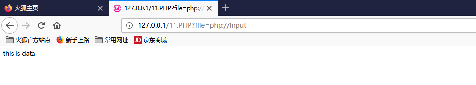
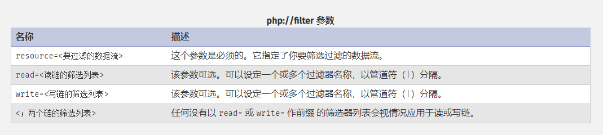
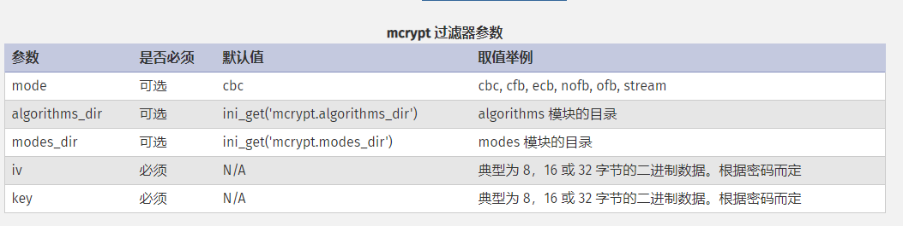
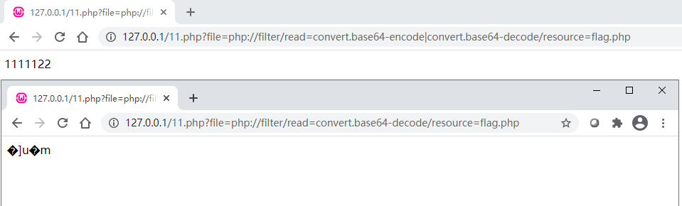

PHP不仅自身带有很多内置 URL 风格的封装协议,还之前很多的支持的协议与封装协议.而PHP伪协议， 可以理解是PHP支持的协议与封装协议.我们在通过伪协议来方便地管理php服务器，也可以用伪协议来做些敏感操作。如之前提过的文件包含，除此外还有ssrf、xxe等。
PHP支持的协议有12种。
1 | file:// — 访问本地文件系统 |
file://
file://(文件系统) 是 PHP 使用的默认封装协议，展现了本地文件系统。 当指定了一个相对路径（不以/、\、\\或 Windows 盘符开头的路径）提供的路径将基于当前的工作目录。 在很多情况下是脚本所在的目录，除非被修改了。 使用 CLI 的时候，目录默认是脚本被调用时所在的目录。
在某些函数里，例如 fopen() 和 file_get_contents()， include_path 会可选地搜索，也作为相对的路径.
用法:
1 | file://./index.php #相对路径读取文件 |
http(s)://
允许通过 HTTP 1.0 的 GET方法，以只读访问文件或资源。 HTTP 请求会附带一个 Host: 头，用于兼容基于域名的虚拟主机。
该文件协议受allow_url_fopen选项限制，出于安全性考虑，此选项只能在 php.ini 中设置。
用法：
1 | http://127.0.0.1/flag.php |
ftp(s)://
允许通过 FTP 读取存在的文件，以及创建新文件。 如果服务器不支持被动（passive）模式的 FTP，连接会失败。和http一样，远程访问受 allow_url_fopen 影响。
打开文件后你既可以读也可以写，但是不能同时进行。 当远程文件已经存在于 ftp 服务器上，如果尝试打开并写入文件的时候， 未指定上下文（context）选项 overwrite，连接会失败。 如果要通过 FTP 覆盖存在的文件， 指定上下文（context）的 overwrite 选项来打开、写入。
用法：
1 | ftp://example.com/pub/file.txt |
php://
PHP 提供了一些杂项输入/输出（IO）流，允许访问 PHP 的输入输出流、标准输入输出和错误描述符， 内存中、磁盘备份的临时文件流以及可以操作其他读取写入文件资源的过滤器。
php://stdin, php://stdout 和 php://stderr
php://stdin、php://stdout和 php://stderr 允许直接访问 PHP 进程相应的输入或者输出流。 数据流引用了复制的文件描述符，所以如果你打开php://stdin并在之后关了它， 仅是关闭了复制品，真正被引用的 STDIN 并不受影响。 注意 PHP 在这方面的行为有很多 BUG 直到 PHP 5.2.1。 推荐你简单使用常量 STDIN、 STDOUT 和 STDERR 来代替手工打开这些封装器。
php://stdin 是只读的， php://stdout和 php://stderr 是只写的。
php://input
php://input 是个可以访问请求的原始数据的只读流.可以用于来接受post提交的数据。enctype="multipart/form-data" 的时候 php://input 是无效的。受allow_url_include选项的影响.
用法：
1 | php://input |

php://output
php://output是一个只写的数据流， 允许你以 print 和 echo 一样的方式 写入到输出缓冲区。
php://fd
php://fd 允许直接访问指定的文件描述符。 例如 php://fd/3 引用了文件描述符 3。
php://filter
php://filter 是一种元封装器， 设计用于数据流打开时的筛选过滤应用。 这对于一体式（all-in-one）的文件函数非常有用，类似 readfile()、 file() 和 file_get_contents()， 在数据流内容读取之前没有机会应用其他过滤器。
php://filter与file://协议相似在双off的情况下也可以正常使用.
用法: php://filter/筛选过滤方式/resource=<文件>
例:php://filter/read=convert.base64-encode/resource=index.php
(ps:read可以省略,如:php://filter/convert.base64-encode/resource=index.php)
php://filter 目标使用以下的参数作为它路径的一部分。 复合过滤链能够在一个路径上指定。详细使用这些参数可以参考具体范例。

而php中可以支持的过滤器一共有4类.
字符串过滤器
#1 string.rot13
将字符串内容进行一次rot13加密.但由于rot13的特点也可以理解为对内容进行解密.
string.rot13（自 PHP 4.3.0 起）使用此过滤器等同于用 str_rot13()函数处理所有的流数据。
#2 string.toupper
将字符串内容中的所有字母转换成为大写字符。
string.toupper（自 PHP 5.0.0 起）使用此过滤器等同于用 strtoupper()函数处理所有的流数据。
#3 string.tolower
将字符串内容中的所有字母转换成为小写字符。
string.tolower（自 PHP 5.0.0 起）使用此过滤器等同于用 strtolower()函数处理所有的流数据。
#4 string.strip_tags
用来过滤字符串内容中的标签。使用此过滤器等同于用 strip_tags()函数处理所有的流数据。可以用两种格式接收参数：一种是和 strip_tags()函数第二个参数相似的一个包含有标记列表的字符串，一种是一个包含有标记名的数组。
要注意的是string.strip_tags已自 PHP 7.3.0 起废弃。
转换过滤器
#1 convert.base64-encode
将内容进行一次base64加密。
#2 convert.base64-decode
将内容进行一次base64解密。
#3 convert.quoted-printable-encode
将 8-bit 字符串转换为quoted-printable 字符串。
#4 convert.quoted-printable-decode
将 quoted-printable 字符串转换为 8-bit 字符串。
压缩过滤器
#1 zlib.deflate和 zlib.inflate
zlib.deflate是用zlib进行文件流加密。
zlib.inflate是用zlib进行文件流解密。
#2 bzip2.compress和 bzip2.decompress
bzip2.compress和 bzip2.decompress工作的方式与上面讲的 zlib 过滤器相同。
加密过滤器
mcrypt.和 mdecrypt.使用 libmcrypt 提供了对称的加密和解密。这两组过滤器都支持 mcrypt 扩展库中相同的算法，格式为 mcrypt.ciphername，其中 ciphername是密码的名字，将被传递给 mcrypt_module_open()。有以下五个过滤器参数可

另外php://filter还可以通过|将过滤结合使用。

zip://, bzip2://, zlib://
zip://, bzip2://, zlib:// 均属于压缩流，可以访问压缩文件中的子文件，更重要的是不需要指定后缀名。不受allow_url_fopen和allow_url_include影响.
zip:// 处理的是 ‘.zip’ 后缀的压缩包
compress.zlib:// 处理的是 ‘.gz’ 后缀的压缩包
compress.bzip2:// 处理的是 ‘.bz2’ 后缀的压缩包
zip://用法:
1 | zip://archive.zip#dir/file.txt |
(zip只能用绝对路径)
bzip2://用法
1 | compress.bzip2:///etc/www/html/file.bz2 |
zlib://用法
1 | compress.bzip2:///etc/www/html/file.gz |
data://
又称为RFC 2397 协议,data://协议在‘allow_url_fopen =on ’与v‘allow_url_include：on’
且php 版本大于等于 php5.2 才能生效。
用法： data://资源类型;编码,内容 （‘data://’也可以写成‘data:’）
例如：
1 | http://127.0.0.1/test.php?a=data://text/plain,<?php phpinfo()?> |
glob://
查找匹配的文件路径模式。
用法：glob://[文件路径]/[文件名].[文件后缀]
例如：
glob://ext/spl/examples/*.php
搜索ext/spl/examples/下所有后缀为php的文件.
phar://
phar:// 数据流包装器自 PHP 5.3.0 起开始有效
用于处理phar文件时,会自动反序列化